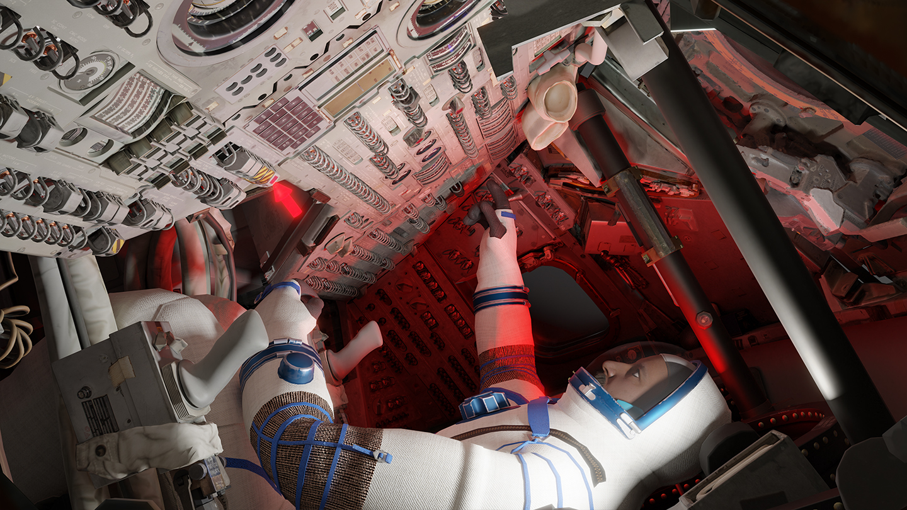

I build impossible rooms.
I build systems for realities that refuse to stay imaginary.
Mission simulators, stubborn tools, games that misbehave, and images still learning their names.
The operating principle
Between instruction & hallucination
Engineer of simulated worlds;
student of real ones.
A programmer specialising in immersive technology, moving between simulation, open tools, games, and an enduring obsession with cinema.
I care about the invisible grammar of things: the way a control teaches the hand, the way a room changes a decision, the way a machine can carry a little poetry without becoming less useful.
Selected portals
A few machines
with their doors open.
Selected work across aerospace training, open-source tools, games, and experiments in productive strangeness.
The complete cabinet
Index of
working worlds.
Every released project in the cabinet. Focus a row to bring its plate into view; open it for the full folio.
Consulting the darkroom…
Professional chronology
The practice,
measured in time.
Building and shipping immersive systems across defence, pharma, manufacturing, games, and independent work.
Instrument legend / engines
Instrument legend / languages
Formation
Marginalia / evidence of life
The interior
world.
Code is one appetite among many. The rest of the shelf is crowded with cinema, music, books, games, two cats, and the languages of home.
Satellite works
Other branches
of the same tree.
Language, longing, visual research, and notes from elsewhere.
An open channel
For strange, useful, or beautifully difficult things